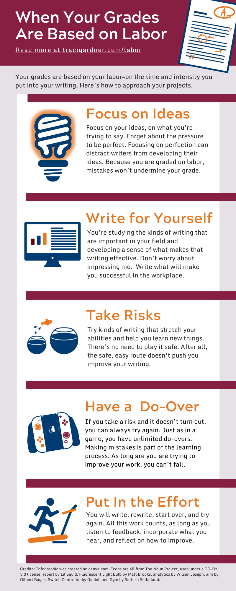

Grades in this course are based on your labor—on the time and intensity that you put into your writing. You are not punished for making mistakes as long as you work to improve throughout the term.
This grading system is probably not what you are used to, so I want to tell you a bit about what happens when your grades are based on labor. Here is how you should approach your work:
-
Focus on Ideas (Not Mistakes). As you work on your projects, focus on what you’re trying to say. Forget about the pressure to be perfect.
Why? Your ideas and the purpose of your message are the most important part of what you write. Focusing on perfection can distract writers from developing their ideas. Because you are graded on labor, mistakes won’t undermine your grade.
- Write for Yourself (Not for Me). In this course, you are learning writing strategies that will use in the workplace. Your goal is to study the things that are important for people in your field. Don’t worry about writing to impress me, as your teacher. Why? I am not going to be with you when you enter the workplace. You need to develop your own sense of what makes writing effective in your field. Your grade is based on how hard you work to find that out.
- Take Risks (Don’t Play It Safe). Try kinds of writing and composing strategies that stretch your abilities and help you learn new things. There’s no need to play it safe. Why? Taking risks won’t count against you. In fact, taking risks can demonstrate that you’re putting in time and effort. After all, the safe, easy route doesn’t push y
- Have a Do-Over (No Penalty). If you take a risk and it doesn’t turn out, you can always try again. If your writing group or I ask you to revise, there is no impact on your grade. Just like in a game, you have unlimited do-overs. Making mistakes is part of the learning process. Whether it takes two tries or more, you are investing time and effort in your writing. As long are you are working to improve, you can’t fail.
- Put In the Effort (No Pain, No Gain). Going through the motions won’t produce professional writing. You have to put in hard work. You need to write, rewrite, start over, and try again to improve your projects. The good news is that the more you work, the better you’ll do in the course. Why? All your work counts toward your course grade, as long as you listen to feedback from your classmates and me, incorporate what you hear, and reflect on how to improve your writing and communication.
Credit: Infographic was created on canva.com. Icons are all from The Noun Project, used under a CC-BY 3.0 license: report by Lil Squid, Fluorescent Light Bulb by Matt Brooks, analytics by Wilson Joseph, aim by Gilbert Bages, Switch Controller by Daniel, and Gym by Sathish Selladurai.